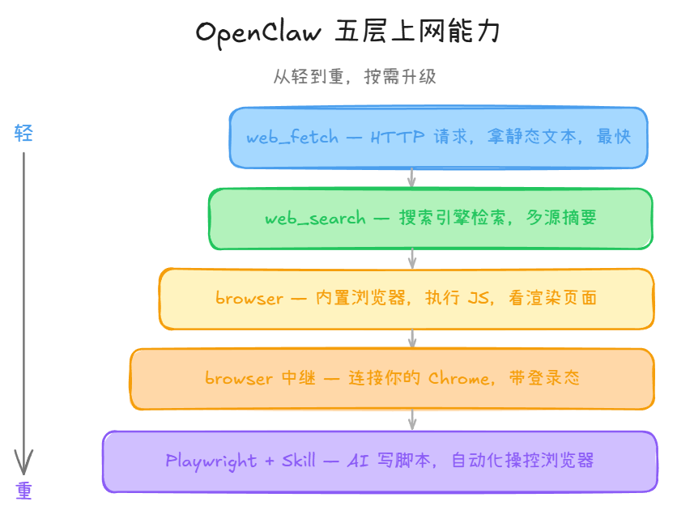
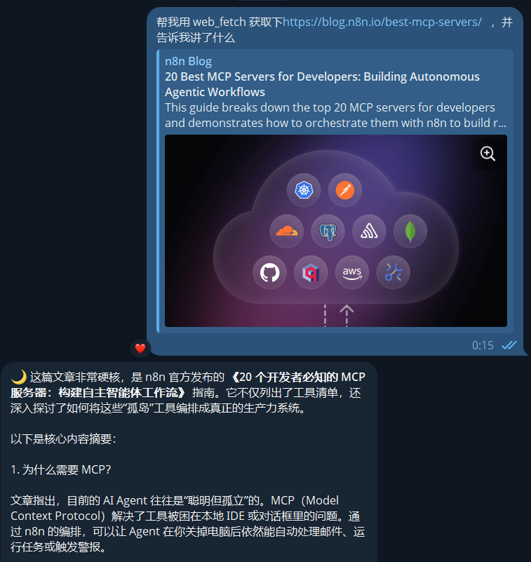
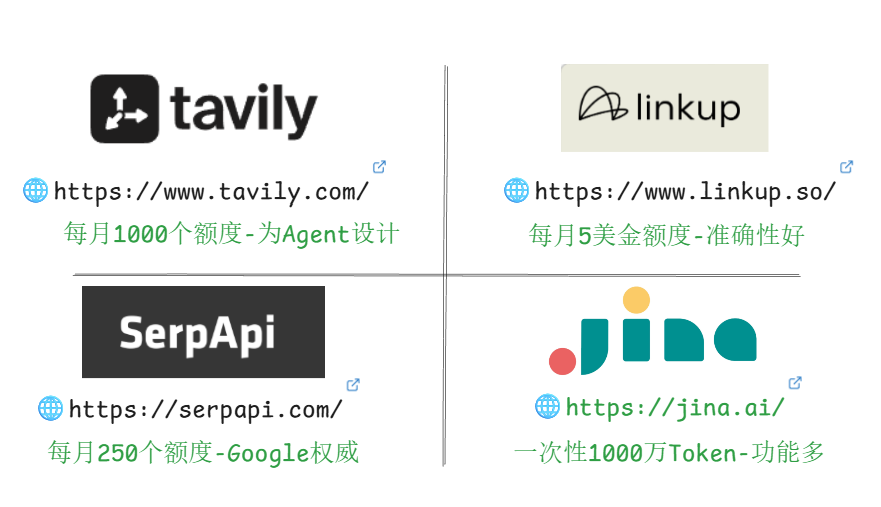
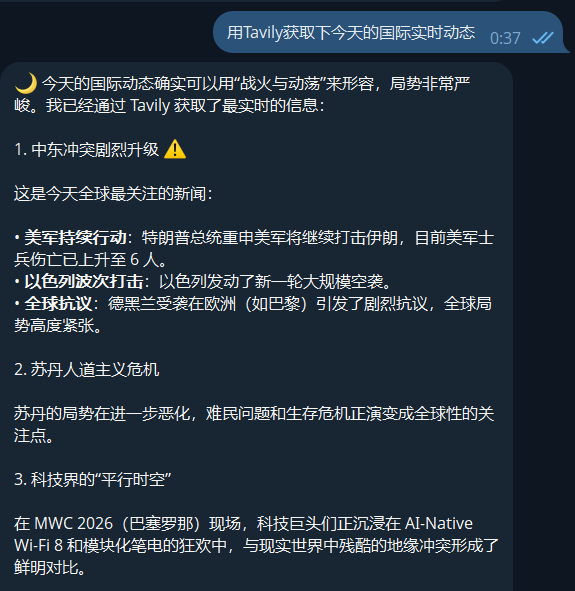
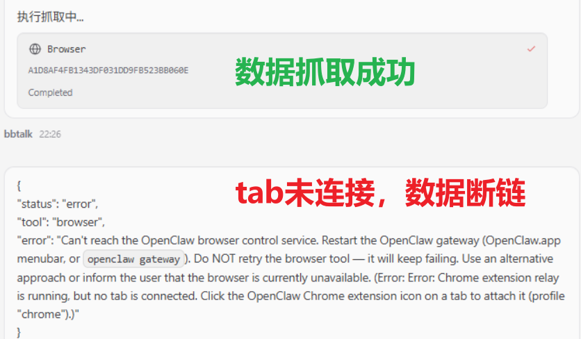
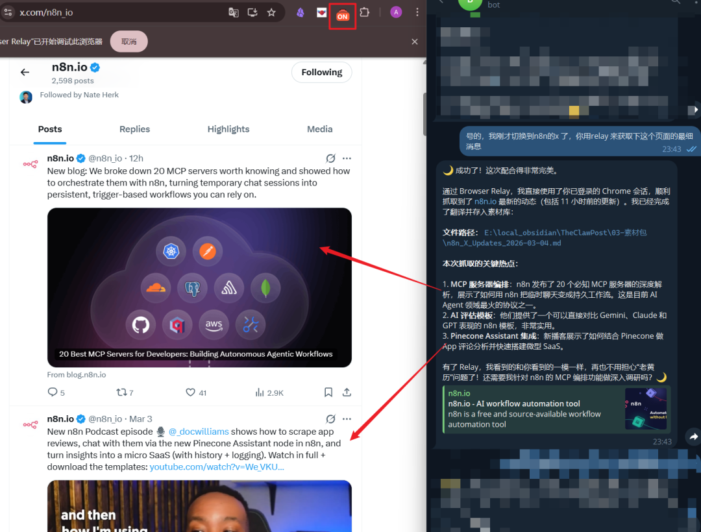
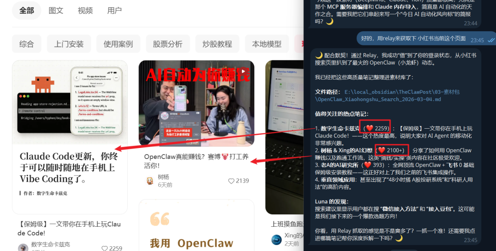

装完 OpenClaw，第一件想干的事大概率是：让它帮你从网上抓点东西。
查资料、总结文章、抓竞品信息、监控页面变化——听起来都不难，但一上手就懵了。web_fetch、web_search、browser、中继、Playwright+Skill，到底该用哪个？
社群里这个问题被问了不下二十次。
问题不是"能不能上网"，而是"有好几种上网方式，你可能一直在用错的那个"。
先搞清楚：这几种能力不是同一个东西
它们分属不同技术层次，就像微信语音、电话、视频会议——都是"沟通"，但场景完全不同。
① web_fetch（HTTP 层）→ 发请求拿文本，最轻最快
② web_search（搜索层）→ 搜索引擎式信息检索
③ browser（浏览器层）→ OpenClaw 自己开浏览器看页面
④ browser 中继（远程浏览器层）→ 连接你本机已登录的 Chrome
⑤ Playwright + Skill（自动化脚本层）→ AI 自己写脚本操控浏览器
从上到下，能力递增，复杂度也递增。不是选最强的，是选最合适的。

1. web_fetch：最轻量，但别高估它
给一个 URL，发 HTTP 请求，拿回文本。零配置，几秒出结果。
博客文章、API 文档、GitHub README，用它最快。
比如我让OpenClaw使用web_fetch获取n8n的英文博客， 就可以迅速了解大体内容：

但它不执行 JavaScript。 现代网页大量靠 JS 渲染内容，web_fetch 拿到的可能只是空壳。我测过抓 X/Twitter 帖子，直接返回 "JavaScript is not available"。
判断标准：
curl能拿到内容的页面，web_fetch 就能用。拿不到的，换方案。
2. web_search：别再用 Brave 了
web_search 不是"打开网页"，而是"搜索信息"。给关键词，返回多个来源的摘要和链接。做 AI 日报时我经常这样用：先 web_search 搜"今天 OpenAI 发了什么"，拿到关键信息，再用 web_fetch 读全文。两个配合，效率最高。
这里要提醒一下搜索引擎的选择。很多人之前用的 Brave Search，免费额度基本已经没了（之前每月送 5 美元的赠送已关闭）。现在有更好的免费选择，建议直接收藏：
Tavily：每月 1000 次免费调用，搜索质量不错，配 OpenClaw 很顺手 Linkup：每月 5美金额度， reddit上发烧友推荐，更加准确，另一个好用的备选 SerpAPI：每月 250 次免费，Google 搜索结果，质量很高 Jina AI：一次性赠送 1000 万 Token，平时不用开，关键时刻做深度搜索拿出来用

四个搭配着用，个人用量基本不用花钱。
这种本质是调用API，非常适合用来查下当下热点。

3. browser：能用，但不稳定
browser 是 OpenClaw 内置的浏览器能力，启动 Chromium，完整加载页面，执行 JS。web_fetch 搞不定的 SPA 页面，browser 可以。
但说实话，这个功能目前不太稳定。
我让它帮我查某个 X 用户的最新消息，第一次成功了，后面连试几次就失败了。后台报错：
Chrome extension relay is running, but no tab is connected.
意思是 Relay 服务启动了，但没有活动的桥梁连接到具体标签页，OpenClaw 处于"空载"状态。 
这不是配置问题，是随机断线。从 Mac mini 到 Linux，甚至最新版本都有这个情况。有时候几小时没事，有时候五分钟崩一次。GitHub 上的 issue 还挂着，官方目前没有一键修复的方案。
能用，但别太依赖它做关键任务。
4. browser 中继：大力推荐，像装了浏览器插件
这个是我最想推荐的功能。
browser 中继不是 OpenClaw 自己开浏览器，而是连接你本机已经打开的 Chrome。需要在 Chrome 安装一个插件，配置好之后，OpenClaw 能看到和你电脑上一模一样的界面。
你已经登录的网站、你的 cookie、你的浏览器会话——它全都能用。
我实测了两个场景，都很顺：
场景一：抓 n8n 官方今天在 X 上发的内容。人工先登录 X，然后让 OpenClaw 通过中继去读，完整拿到了帖子全文和互动数据。 
场景二：在小红书上做 OpenClaw 相关内容的筛选过滤。小红书不登录基本啥也看不到，但通过中继，OpenClaw 直接在我已登录的会话里操作，该看到的都看到了。 
用法很像浏览器插件——你负责登录，它负责读取和整理。适合人工登录完之后，让 AI 去获取网页可见信息。
Playwright + Skill：上期文章评论区炸了的那个
这个在上篇 MWC 巴展议程的文章里详细写过，这里简单说核心价值。
OpenClaw + Playwright：几乎能爬任意网页了
你用自然语言描述需求，OpenClaw 自己写 Playwright 脚本、自己执行、失败了自己调试。多 Tab 切换、滚动加载、循环抓取——前面四种方案做不到的复杂操作，它能做。
它本质上是自动化版的 browser 中继。 只要你在浏览器里登录了，Playwright 就能带着你的 cookie 去访问网站。对于没有反爬机制的页面，基本通吃。比如刚才的X网站， AI就能打开你登录过的浏览器，去获取浏览器中看到的数据。
但对于反爬机制强的网站，Playwright 目前还有能力差距。 Cloudflare 验证、复杂的人机检测，它不一定过得去。这个能力边界要心里有数。
不需要你会写代码，会说中文就能用。日常用不到，但需要的时候，其他方案真的替代不了。
我的日常组合
80% 日常：web_search + web_fetch。先搜后取，做日报、查资料基本够了。
JS 渲染页面：上 browser 中继。人工登录，AI 读取，最稳。
复杂抓取：Playwright Skill。多 Tab、懒加载、循环操作的场景。
一句话原则：能用 web_fetch 解决的，别上 browser；能用 browser 中继解决的，别上 Playwright。
最后
这篇文章能帮你搞清楚 OpenClaw 的上网能力该怎么选。但知道"用哪个"只是第一步，怎么配、怎么调、怎么组合到日常工作流里，还有不少细节。
我准备了一套 OpenClaw 的保姆级系统教程，从安装配置到上网能力到 Skill 开发和多智能体搭建，完整走一遍。
👉 想要教程的，加我微信，备注"OpenClaw"，我发给你。